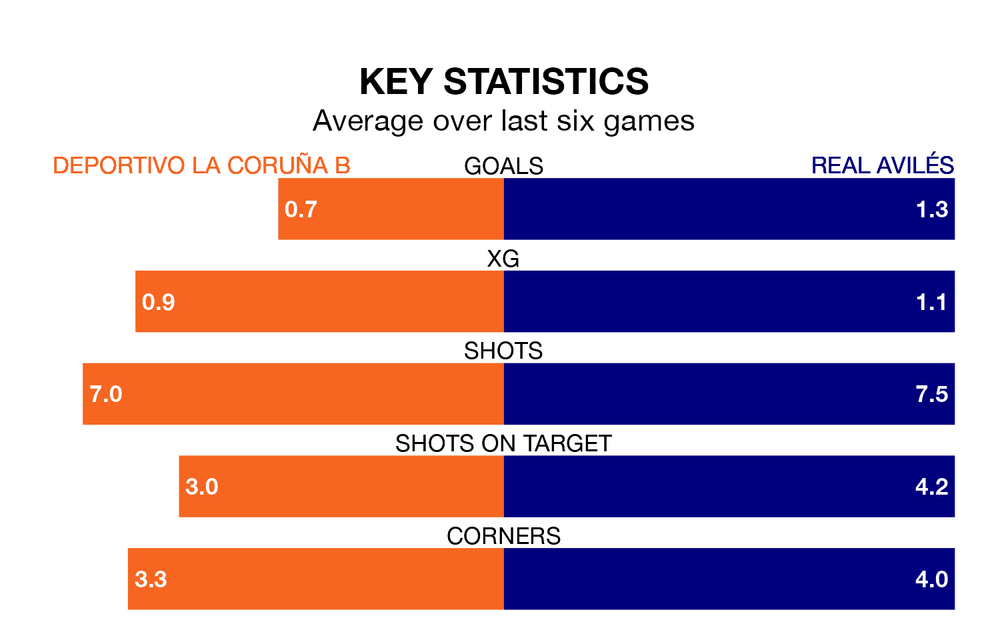

Deportivo La Coruña B are on a poor run ahead of hosting Real Avilés at Ciudad Deportiva de Abegondo-Campo 2 on Sunday, with just four points collected from their last six games.
Deportivo La Coruña B have picked up one win and one draw in their last six Segunda División RFEF Group 1 games, and face an Avilés side whose last six games have brought three wins and one draw.
With 20 goals in 17 games so far this season, Deportivo La Coruña B are scoring at the league's average rate with 1.2 goals per game. And they are conceding more than average, letting in 22 goals at a rate of 1.3 per game.
Avilés are also average scorers, with 1.2 goals per game. They have conceded 1.1 goals per game.
The hosts are 13th in the table after 17 games, of which they have won four and drawn six, earning 18 points.
The away side are two places ahead of Deportivo La Coruña B in 11th, with four wins and nine draws putting them on 21 points.
Deportivo La Coruña B's last match was on Sunday, a 1-1 draw against Real Oviedo B, with getting the goal for Deportivo La Coruña B.
Avilés lost 2-0 against Ourense CF last time out, on January 6.
Updated: 10:50, 10/01/24